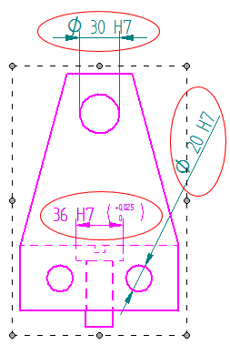
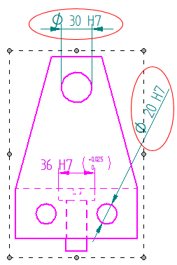

Options tab (Tolerance Table Properties dialog box)
- Include dimensions in the drawing views
-
Displays the tolerance values for fit dimensions placed inside the drawing view while in the Draw In View environment.
This option applies to tolerance tables created using either of the following selection methods:
-
By Active Sheet
-
By Drawing View
Example:Fit tolerance dimensions are included or excluded based on the following:
This option
Specifies this
Include dimensions in the drawing views=Selected
Include all fit dimensions inside the drawing view and connected to it.

Include dimensions in the drawing views=Cleared
Exclude the fit dimensions added inside the drawing view.

-
How do I
Create a tolerance tableAdd or remove dimensions in a tolerance table